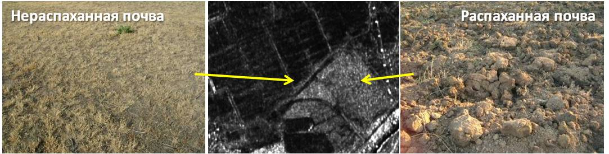

Радиолокационные данные в географических исследованиях и картографировании |
||||||||||
|
Рассматриваемые вопросы: Интенсивность отражённого сигнала и, соответственно, яркость участка на радиолокационном снимке зависит от шероховатости поверхности (размеров неровностей относительно длины радиоволны) - h: чем она выше, тем больше мощность обратного сигнала. Согласно критерию Рэлея, поверхность считается гладкой при размерах шероховатостей h<λ /8cosθ, где λ - используемая при съёмке длина волны, а θ - угол падения волны. Схематичное представление влияния шероховатости поверхности на интенсивность обратного сигнала  Участки распаханной и нераспаханной почвы на радиолокационном снимке Radarsat-2 Диэлектрические свойства поверхности Значительное влияние на отражательную способность объектов в радиоволновом диапазоне оказывают их диэлектрические свойства, то есть способность изменять приходящее электромагнитное излучение. Диэлектрические свойства принято характеризовать количественно коэффициентом относительной диэлектрической проницаемости ε. Известно, что сухие почвы имеют значения ε от 3 до 8, а вода - 80. Чем меньше ε, тем на большую глубину проникают радиоволны и меньше отражательная способность поверхности. Именно с большей глубиной проникновения связано то, что сухие почвы дают меньший обратный сигнал (более тёмные на радиолокационном изображении), чем увлажнённые почвы. Аналогичная ситуация наблюдается и для растительности: чем выше уровень влагосодержания в частях растений, чем выше интенсивность обратного рассеяния сигнала. Радиоволны, пришедшие к земной поверхности от радиолокатора, по-разному взаимодействуют с расположенными на ней объектами. Выделяют 3 основных вида такого взаимодействия, называемых механизмами рассеяния: 1 - однократное, 2 - двукратное, 3 - объёмное.При однократном рассеянии волны зеркально отражаются в сторону, противоположную радиолокатору. Объекты, которые характеризуются однократным рассеянием, имеют ровную поверхность (например, водная гладь, открытая почва и др.) и на радиолокационном изображении отображаются самыми тёмными. Двукратное рассеяние свойственно вертикально ориентированным объектам, например, зданиям. Они имеют самую высокую яркость на снимках. При объёмном рассеянии происходит многократное переотражение радиоволн от частей объектов (например, от листвы, ветвей и стволов деревьев). Объекты, характеризующиеся объёмным рассеянием, имеют промежуточные значения яркости.
|
|||||||||
| © 2017 г. Балдина Е.А., Трошко К.А., лаборатория аэрокосмических методов, Географический факультет МГУ имени М.В. Ломоносова | ||||||||||